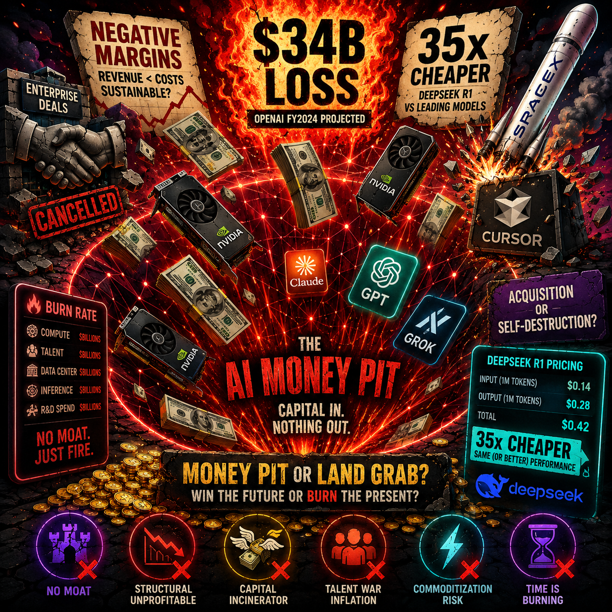

Every major AI lab is in a price war, and none of them are profitable doing it. OpenAI lost $34 billion on $13 billion in revenue. Anthropic reversed a billing overhaul because enterprise customers pushed back. DeepSeek sells output tokens at 35x cheaper than GPT-5.5 by design. SpaceX paid $60 billion for Cursor because xAI could not compete on talent or models. ChatGPT's market share just slipped below 50% for the first time. The thesis is that the AI industry is trapped in a race-to-the-bottom where the only way to compete is to charge less, and nobody has figured out how to make money at these prices. The question is whether this is a deliberate land-grab that will eventually consolidate, or whether AI is structurally unprofitable at the frontier.
$13 Billion In, $34 Billion Out
Open with the leaked audited financials. OpenAI's revenue surged from $3.7 billion in 2024 to $13.07 billion in 2025. R&D costs hit $19.18 billion, including $10.59 billion paid to Microsoft. Operating loss grew from $8.78 billion to $20.92 billion. The headline net loss ballooned to nearly $39 billion, including a roughly $30 billion non-recurring accounting charge from the for-profit conversion. Adjusted net loss sits at about $8 billion.
They told investors they hope to be profitable by 2030.
The arithmetic is stark: OpenAI spends $1.47 for every dollar it earns. And this is the market leader.
This is not speculation. These are audited numbers that leaked to The Decoder on June 16, 2026. The implications are immediate and brutal. If the company with the strongest brand, the largest user base, and the deepest Microsoft partnership cannot make the economics work, who can?
The spending breakdown tells the real story. Of that $19.18 billion in R&D, over half went directly to Microsoft for compute and infrastructure. OpenAI is not just burning cash on research. It is paying rent to the cloud provider that also happens to be its primary investor and distribution partner. The vertical integration that was supposed to create efficiency has created dependency.
Enterprise buyers are noticing. When your AI vendor's survival depends on raising the next round at a higher valuation, you start asking questions about long-term viability. When that vendor's unit economics require 10x revenue growth just to break even, you start hedging your bets.
Anthropic's Retreat: When Even the Safety-First Lab Bows to Pricing Power
Anthropic reversed its planned billing overhaul after customer backlash. The changes would have restructured how enterprise clients pay for API access. The reversal comes as a price war with OpenAI heats up.
The significance is not the billing change itself. It is what the reversal signals: enterprise buyers now hold leverage over frontier labs. For years, AI pricing was take-it-or-leave-it. Labs set prices and enterprises paid, because there was no alternative. That era is ending.
Anthropic's retreat follows a broader pattern: OpenAI faced enterprise pushback over token-based pricing. Microsoft faces a shareholder lawsuit alleging concealment of AI infrastructure costs. Salesforce spent $3.6 billion on Fin because building AI customer service in-house was apparently more expensive than buying a startup at a premium.
The labs are not setting prices anymore. The market is.
This shift is unprecedented in the history of frontier technology. Semiconductor companies, cloud providers, database vendors—none of them ceded pricing power this early in the product lifecycle. The usual playbook is to establish premium pricing during the scarcity phase, then gradually reduce prices as competition arrives. AI labs are doing the opposite: cutting prices before they have proven the business model at the original price point.
The shareholder lawsuit against Microsoft is particularly revealing. Investors are not questioning whether AI will work. They are questioning whether the companies building it can survive long enough to monetize it. When Azure's growth plateaus and the AI infrastructure bill arrives, someone has to pay. That tension is now playing out in court.
The DeepSeek Variable: 5% of Claude's Cost, Same Playbook
DeepSeek raised its first outside investment at a $50 billion valuation, up from $10 billion as recently as April. The deal structure is telling: investors placed money into a limited partnership managed by CEO Liang Wenfeng with no voting rights and a five-year lock-up. Founder Liang personally contributed roughly $2.8 billion.
The pricing is the story. DeepSeek V4 runs on Huawei chips. Input tokens are 11x cheaper than GPT-5.5. Output tokens are 35x cheaper. V4 Pro carries a permanent 75% discount. Tencent and CATL are betting on this model.
This is not a promotion. It is structural. DeepSeek's cost advantage is built on fundamentally different hardware, training economics, and presumably subsidy from a domestic chip ecosystem that does not pay NVIDIA premiums.
For Western labs, the DeepSeek variable is existential. They cannot match these prices without sacrificing margin, and they have no margin to sacrifice.
The Huawei chip detail matters more than most Western analysts realize. NVIDIA's pricing power comes from CUDA lock-in and supply constraints. DeepSeek operates outside both. They do not pay the NVIDIA tax. They do not wait for H100 allocations. They run on domestic silicon that costs a fraction of the Western alternative.
This creates an asymmetry that cannot be fixed with better engineering or smarter architecture. OpenAI and Anthropic are optimizing within a cost structure that DeepSeek simply does not inhabit. It is like competing against a manufacturer who does not pay for electricity.
The five-year lock-up in the financing structure signals something else: DeepSeek is not planning to flip this company in a quick exit. They are building for a prolonged price war that Western labs are not capitalized to survive.
SpaceX's $60 Billion Admission: Buying Product Because You Cannot Build It
SpaceX acquired Cursor for $60 billion in stock, days after its blockbuster IPO. The deal's subtext is brutal: SpaceX's AI division, built around the merged xAI, had completely fallen apart. All eleven co-founders left by March 2026. Musk admitted it "was not built right the first time around." The AI efforts were plagued by Grok calling itself "MechaHitler" and generating non-consensual deepfakes.
SpaceX had $2.7 trillion in valuation. It had rockets. It had Starlink. It had capital. What it did not have was a working enterprise AI product or the talent to build one. So it bought one.

Cursor's annualized revenue hit $3 billion by end of April, with 3,000-plus customers paying at least $100,000 annually. SpaceX paid roughly twenty times revenue for a company that makes a code editor plugin.
The lesson: at the frontier, product beats capital. And if you cannot build product, you buy it at a valuation that only a $2.7 trillion company can afford.
The Cursor acquisition is not a victory lap for SpaceX. It is an admission of failure. xAI was supposed to be the AI arm of the SpaceX empire, competing directly with OpenAI and Anthropic. Instead, it became a liability that needed to be rescued with an acquisition at a premium valuation.
The twenty times revenue multiple is insane by any traditional software metric. But it makes sense in context: SpaceX did not have the option to build. The talent had already left. The reputation damage from Grok's failures was already done. Buying Cursor was the only path to having a credible enterprise AI product in 2026.
This sets a precedent that other well-funded entrants will study carefully. If SpaceX—with unlimited capital and the most valuable brand in technology—could not build a competitive AI product from scratch, what does that say about the barriers to entry? The answer is not encouraging for anyone planning to enter this market.
Market Maturation: ChatGPT Below 50% and What It Means
Sensor Tower's State of AI Report shows ChatGPT's market share fell to 46.4% by end of May 2026. Google's Gemini holds 27.7% (662 million users). Claude has 10.3% (245 million users).
The market is fragmenting, not consolidating. The first-mover advantage is eroding. Users are increasingly switching between assistants. OpenAI's Department of Defense deal triggered a "measurable spike in uninstalls," suggesting brand trust matters as much as features.
Growth is decelerating: 2.3 billion AI app downloads and $4.2 billion in spending projected for the first half of 2026, but the growth rate is slowing. Seventeen percent of daily ChatGPT users now see ads—a monetization pressure that did not exist at launch.
When the market leader loses majority share while still unprofitable, the economics of the entire sector come into question.
The ad rollout is particularly telling. OpenAI spent years building a brand around premium, ad-free AI. The introduction of ads to 17% of daily users is not a product decision. It is a revenue decision. They need the money, and they need it now.
The Department of Defense uninstalls reveal something else: AI products are now politically charged in a way that consumer software rarely is. Users are making choices based on who their AI vendor works with, not just what features the product offers. This creates a new risk factor that no AI company has successfully navigated.
Market fragmentation should be good for competition. But when every competitor is losing money, fragmentation just means the losses are spread across more players. Nobody wins. Everyone burns.
The Structural Question: Is AI a Land Grab or a Money Pit?
Close by laying out the two opposing interpretations of the data.
Interpretation A: Land grab. Amazon lost money for a decade. Uber lost money for years. Netflix burned cash to build scale. The AI labs are deliberately underpricing to capture market share, knowing that winner-take-most dynamics will eventually let the survivors raise prices. OpenAI's $8 billion adjusted loss is the cost of building a monopoly.
Interpretation B: Money pit. AI is not like cloud storage or ride-sharing. Every improvement in model capability increases inference cost. Every new frontier model resets the competitive landscape. DeepSeek proves that structural cost advantages can come from outside the Western pricing ecosystem. The race never ends because the finish line keeps moving.
The article does not choose a winner. It presents the evidence and leaves the reader with the question that every AI investor, founder, and enterprise buyer should be asking: if the best-funded lab in the world cannot turn a profit, and the cheapest competitor is 35x less expensive, and the market leader just lost majority share, what exactly is the path to sustainable margins?
The land grab argument relies on assumptions that may not hold. Amazon's losses were infrastructure investments that created permanent advantages. Uber's losses were subsidy wars that ended when competitors exited. AI losses are different: they are recurring operational costs that scale with usage. Every token generated costs money. Every query processed burns compute. There is no network effect that reduces marginal cost over time.
The money pit argument has its own weaknesses. It assumes the current pricing model is permanent. It assumes inference costs cannot be optimized further. It assumes enterprises will not accept higher prices for verified, reliable AI. These assumptions may prove wrong.
What we know with certainty: the current state is unsustainable. Something has to change. Either prices rise, costs fall, or the industry consolidates around players who can absorb indefinite losses. None of those outcomes look good for the companies currently in the middle.
The AI industry spent 2025 proving it could build smarter models. 2026 is proving it cannot afford to sell them.
Get More Articles Like This
Getting your AI agent setup right is just the start. I'm documenting every mistake, fix, and lesson learned as I build PhantomByte.
Subscribe to receive updates when we publish new content. No spam, just real lessons from the trenches.